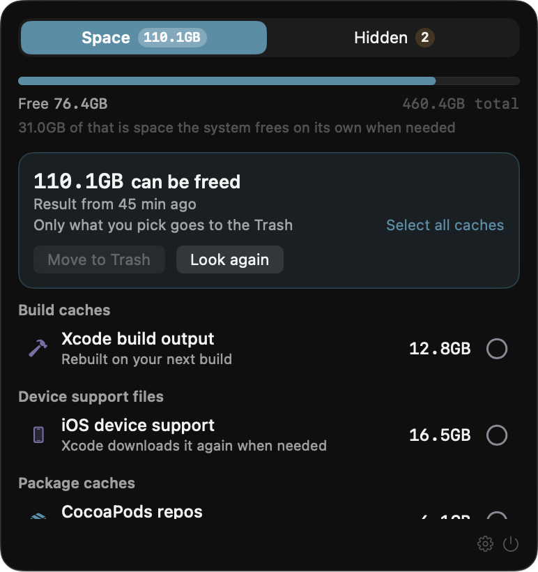

Find the files
you stopped using
but never deleted
App caches, stale build output, forgotten downloads.
Only what you pick goes to the Trash.
rayforvideos.github.io/attic
App caches, stale build output, forgotten downloads.
Only what you pick goes to the Trash.
rayforvideos.github.io/attic
